Chapter 0. 기계학습 소개¶
'기계학습 - 오일석' 1장 학습 내용
0절. AI¶
인공지능¶
- 사고나 학습 등 인간이 가진 지적 능력을 컴퓨터로 구현한 기술
- 인간 or 인간 이상의 지식 상태 구현
머신러닝¶
- 컴퓨터가 스스로 학습하여 인공지능의 성능을 향상시키는 기술 방법
- 여러 가지 경우를 학습하여 그와 비슷한 경우의 문제 해결
딥러닝¶
- 인간의 뉴런과 비슷한 인공신경망 방식으로 정보 처리
- 상황에 적합한 학습 경험 이용
1절. 기계학습¶
학습¶
- 경험의 결과로 나타나는 비교적 지속적인 행동, 잠재력의 변화
- 지식을 습득하는 과정
기계학습¶
- 사례 데이터, 과거 경험으로 성능 기준이 최적화된 프로그래밍 [Alpaydin, 2010]
- 성능을 개선하거나 정확하게 예측하기 위해 경험을 이용하는 계산학 방법 [Mohri, 2012]
- 데이터를 기반으로 인간처럼 응용하는 학습
기계학습으로의 전환¶
| 기간 | 요약 | 설명 |
|---|---|---|
| 초기 | 인공지능의 탄생 | 컴퓨터의 뛰어난 능력과 기대감의 지식 기반 방식 |
| 중기 | 인공지능의 주도권 전환 | 지식 기반 방식에서 기계학습 방식으로 전환 |
| 후기 | 인공지능의 발전 | ?? |
기계학습 이해¶
회귀(Regression)¶
- 실수의 목표값
| 요소 | 설명 |
|---|---|
| 가로축 | 특징 |
| 세로축 | 목표치 |
| 데이터 | 관측된 4개 점 |
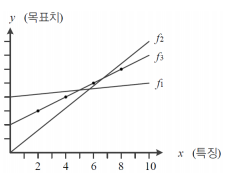
예측(prediction)¶
- 임의의 시간이 주어졌을 때 이동체의 위치 예측
- 회귀와 분류로 분리
| 종류 | 영문 | 분류값 |
|---|---|---|
| 회귀 | Regression | 실수의 목표값 |
| 분류 | Classification | 부류값 |
훈련 집합¶
- 관측된 4개의 점은 데이터이자 훈련 집합
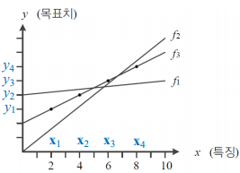
| 번호 | X 값 | 번호 | Y 값 | ||
|---|---|---|---|---|---|
| \(x_1\) | (2.0) | \(y_1\) | (3.0) | ||
| \(x_2\) | (4.0) | \(y_2\) | (4.0) | ||
| \(x_3\) | (6.0) | \(y_3\) | (5.0) | ||
| \(x_4\) | (8.0) | \(y_4\) | (6.0) |
데이터 모델링¶
- 데이터가 직선이므로 직선 모델 선택
- 직선 모델의 수식
- 매개 변수 : \(w\), \(b\)
| 차원 | 수식 |
|---|---|
| 1차원 | \(y = wx + b\) |
| 2차원 | \(y = w_1x^2 + w_2x + b\) |
기계학습 목적¶
- 가장 정확하고 예측 가능한 최적의 매개 변수 탐색
- 최적값을 모르는 상태에서 학습 시작
- 점차 성능 개선 후 최적에 도달
- \(f_1\) -> \(f_2\) -> \(f_3\) 까지 성능 개선
- 최적 \(f_3\)
- \(w=0.5\)
- \(b=2.0\)
기계학습의 발전 방향¶
- 훈련 집합에 없는 새로운 샘플(테스트 샘플)에 대한 오류 최소화
- 새로운 샘플에 대한 높은 성능 일반화(Generalization)
기계학습 비교¶
| 기준 | 사람 | 기계학습 |
|---|---|---|
| 학습 과정 | 능동적 | 수동적 |
| 데이터 형식 | 자연에 존재하는 그대로 | 일정한 형식에 맞춰 사람이 준비 |
| 동시 학습 가능 과업 수 | 여러 과업 학습 | 하나의 과업 |
| 학습 원리에 대한 지식 | 매우 제한적 | 모든 과정이 공개적 |
| 수학 의존도 | 매우 낮음 | 매우 높음 |
| 성능 평가 | 경우에 따라 객관적이거나 주관적 | 객관적(수치로 평가, ex : 정확률 99.9%) |
| 역사 | 수백만 년 | 60년 가량 |
2절. 특징 공간¶
차원 별 특징 공간¶
1차원 특징 공간¶
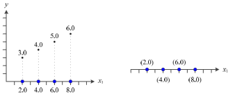
| 번호 | 표시값 |
|---|---|
| \(x_1\) | 특징 |
| \(y\) | 목푯값 |
2차원 특징 공간¶
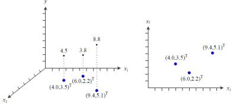
| 번호 | 표시값 |
|---|---|
| \(x_1\) | 특징 1 |
| \(x_2\) | 특징 2 |
| \((x_1, x_2)^T\) | 특징 벡터 |
| \(y\) | 목푯값 |
- 특징 벡터 예시
- \(x=(몸무게, 키)^T\), \(y=bmi\)
- \(x=(체온, 두통)^T\), \(y=감기 여부\)
다차원 특징 공간¶
- \(d\)-차원 데이터 특징 벡터
- \(x = (x_1, x_2, ..., x_d)^T\)
- 직선 모델 매개 변수 = \(d + 1\)
\(d\)-차원 데이터 모델
\(y = w_1x_1 + w_2x_2 + ... + w_dx_d + b\)
2차 곡선 모델 예제¶
- 다차원 특징 공간에서의 2차 곡선 모델
- 매개 변수 = \(d^2 + d + 1\)
- 데이터셋 예시
| 데이터셋 | 매개 변수 |
|---|---|
| Iris | \(d = 4\), 21개 |
| MNIST | \(d = 784\), 615,441개 |
2차 \(d\)-차원 데이터 모델
\(y = w_1x^2_1 + w_2x^2_2 + ... + w_dx^2_d + w_{d+1}x_1x_2 + ... + w_{d^2}x_{d-1}x_d+w_{{d^2}+1}x_1+...+w_{{d^2}+d}x_d+b\)
다차원 특징 공간 예제¶
- 특징 많으면 목표값 정확도 감소
- 올바른 학습 불가
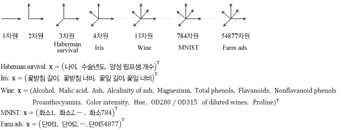
3절. 데이터¶
데이터¶
- 과학 기술 발전 과정
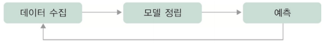
데이터와 기계학습¶
- 단순한 수학 공식으로 문제 해결 불가
- '8' 숫자 패턴과 '단추' 패턴 구별
- 자동으로 모델을 찾아내는 과정 필수
데이터 생성 과정¶
인위적 상황¶
- 데이터의 결과값이 생성되는 과정을 인지한 경우
- 예시
- 두 개의 주사위에서 나온 눈의 합이 \(X\)라면 \(y=(x-7)^2+1\) 점수 획득
- \(X\)를 알면 정확한 \(Y\) 예측 가능
- \(X = {3, 10, 8, 5}\) 일 경우
- \(Y = {17, 10, 2, 5}\)
- \(X\)의 발생 확률 \(P(X)\)의 정확한 파악 가능
- \(P(X)\) 기반 새로운 데이터 생성
실제 기계학습 문제¶
- 데이터 생성 과정은 미지수
- 주어진 훈련 집합의 예측 모델 or 생성 모델 근사 추정
4절. 데이터베이스¶
데이터베이스의 품질¶
- 다양한 데이터를 충분히 수집
- 주어진 응용 환경에 맞는 데이터 확보
- 추정 정확도 상승
공개 데이터베이스 종류¶
- Iris
- MNIST
- ImageNet
- 'list of datasets for machine learning research'(위키피디아)
- UCI Repository
Iris¶
- 붓꽃 분류 데이터셋
- 다운로드 사이트
| 데이터 구성 | 특징 벡터 | 타겟(Label) |
|---|---|---|
| 150개 샘플(각 4개 수치 특징의 표 형식 데이터) | 4가지 측정값 (1) 꽃받침 길이(Sepal Length) (2) 꽃받침 너비(Sepal Width) (3) 꽃잎 길이(Petal Length) (4) 꽃잎 너비(Petal Width) |
붓꽃 품종(3종류) (1) Setosa (2) Versicolor (3) Virginica |
MNIST¶
- 손글씨 숫자 이미지 분류 데이터셋
- 다운로드 사이트
| 데이터 구성 | 특징 벡터 | 타겟(Label) |
|---|---|---|
| 70,000개 이미지(학습 60,000 / 테스트 10,000) | 28 × 28 흑백 이미지 픽셀값 (1) 784 차원 (2) 각 픽셀을 1개 특징으로 펼친 벡터 |
숫자 10종류(0 ~ 9) |
ImageNet¶
- 대규모 객체(사물) 이미지 분류 데이터셋
- 다운로드 사이트
| 데이터 구성 | 특징 벡터 | 타겟(Label) |
|---|---|---|
| 14,197,122개 영상 (21,841개 부류, 부류 당 수 백 ~ 수 천 장) |
컬러(RGB) 이미지 픽셀값 (1) 가변적 해상도 (2) 보통 모델 입력 크기(ex: 224 x 224) 리사이징 |
21,841개 부류 |
매니폴드 가설¶
- 왜소한 크기 데이터베이스의 성능
- 방대한 공간에서 실제 데이터는 매우 작게 발생
- MNIST의 가능한 총 샘플 수는 \(2^{784}\) 가지이지만 6만 개 샘플 보유
데이터 가시화¶
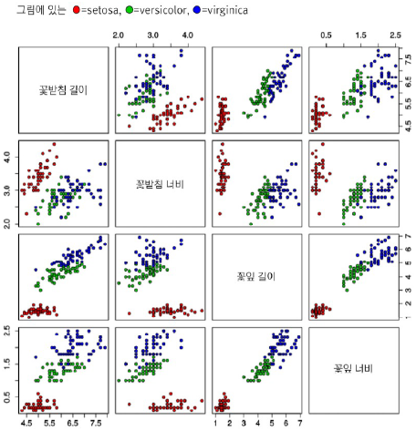
- 4차원 이상의 초공간은 한 번에 가시화 불가
- 2개씩 조합한 그래프 활용
5절. 모델 선택¶
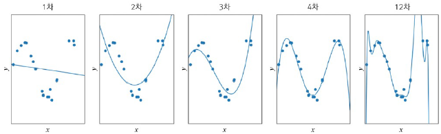
과소적합¶
- 1차 모델
- 모델 용량이 작아 오차가 큰 현상
해결 대안¶
- 비선형 모델 사용
- 2차, 3차, 4차 다항식 곡선 선택
- 1차(선형)에 비해 오차 감소
과잉적합¶
- 12차 모델
- 훈련 집합에 완벽히 근사화
- '새로운' 데이터 예측 시 문제 발생
- 큰 용량으로 학습 시 잡음까지 수용
- 적절한 용량의 모델 선택 작업 필수
다항식 모델 비교 관찰¶
| 차수 | 성능 |
|---|---|
| 1차 ~ 2차 | 훈련 집합과 테스트 집합 모두 낮은 성능 |
| 3차 ~ 4차 | 훈련 집합에서 12차보다 낮지만 테스트 집합에서 높은 성능 -> 높은 일반화 능력 |
| 12차 | 훈련 집합에서 높은 성능을 보이지만 테스트 집합에서 낮은 성능 -> 낮은 일반화 능력 |
바이어스와 분산¶
- 트레이드오프 관계
| 모델 | 용량 | 바이어스 | 분산 |
|---|---|---|---|
| General | Small | Big | Small |
| Complex | Big | Small | Big |
바이어스(Bias)¶
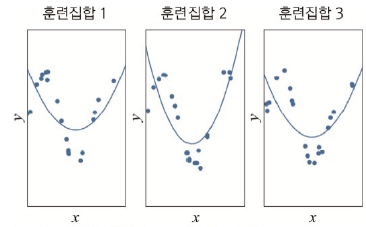
- 항상 큰 오차
- 큰 바이어스와 비슷한 모델
- 낮은 분산
분산(Variance)¶
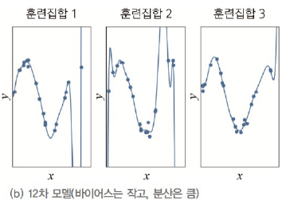
- 항상 작은 오차
- 작은 바이어스와 다른 모델
- 낮은 분산
기계학습 목표 모델¶
- 낮은 바이어스 + 낮은 분산의 예측기
- 바이어스 희생은 최소 + 분산은 최대로 낮추는 전략
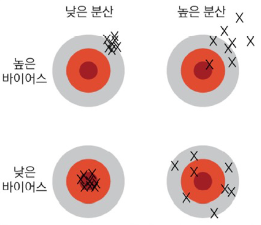
6절. 규제¶
현대 기계학습 전략¶
- 용량이 충분히 큰 모델 선택
- 선택한 모델에 규제(Regularization) 적용
- ex: 12차 다항식 선택 후 규제 적용
데이터 확대¶
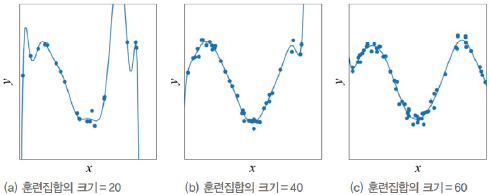
- 데이터 다수 수집 -> 일반화 능력 향상
데이터 수집¶
- 많은 비용 소모
- 인위적인 데이터 확대 필요
- 훈련 집합의 샘플 변형 필요
- 일부 회전 or 와핑(찌그러짐)
- 그라운드 트루스(Ground Truth) 레이블링 필수
그라운드 트루스(Ground Truth)¶
-
모델 채점 여부를 위한 정답(실제 값)
-
사람이 직접 눈으로 보고 달아준 정확한 라벨¶